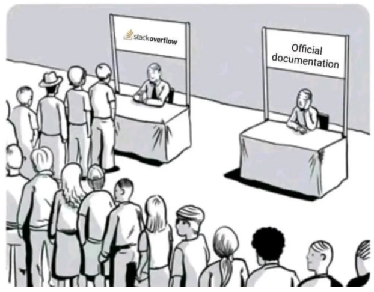
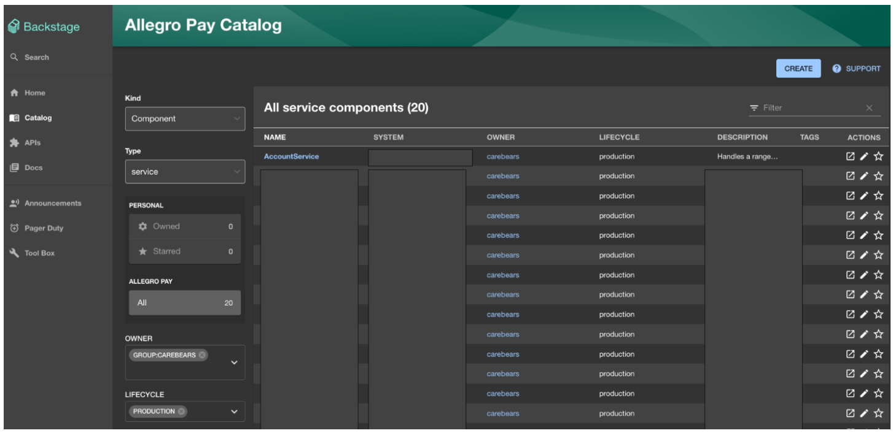

Jakie narzędzia pomagają w budowaniu dokumentacji?
Wpis pochodzi z serii poświęconej budowaniu dokumentacji. Opisane zostały już dwa zagadnienia, czyli "dla kogo piszemy?" oraz "co warto opisywać". Zagadnienie "jakimi narzędziami" zamyka tę trylogię.
Uwielbiam eksperymentować — dodawać nowe biblioteki, sprawdzać narzędzia i optymalizować swoją pracę. Kolejność wpisów w tej serii nie była jednak przypadkowa. Mógłbym od razu pokazać, z czego korzystamy w naszej organizacji i kropka. Cel miałem natomiast nieco inny, bo zależało mi na podkreśleniu tego, że "tooling" jest wtórny, a liczy się intencja. Skoro udało Ci się już przejść przez poprzednie kroki to czas na wisienkę na torcie inżynierskim, czyli zabawki.
Kontynuacja o diagramach¶
Podczas ostatniego wywodu o diagramach wspomniałem, że możemy skorzystać z czegoś opartego o Markdown — i to będzie moje pierwsze narzędzie na rozgrzewkę, czyli Mermaid. Myśl przewodnia jest mniej więcej taka:
Mermaid pozwala tworzyć diagramy i wizualizacje za pomocą tekstu i kodu.
Dla mnie bomba. Piszę README i zaraz obok mogę dodać diagram, bez podpinania bibliotek, bo więksi gracze jak GitHub wspierają to z pudełka. Bez kroku kompilacji, którym muszę się przejmować (jak w PlantUML) i bez linków do zewnętrznych platform (jak w draw.io). Narzędzie nie jest idealne, ma swoje ograniczenia, ale w gruncie rzeczy po prostu daje radę. Znajdą się przypadki, gdzie konkurenci wymienieni wyżej lepiej sobie radzą z bardziej skomplikowanymi strukturami, ale to kompromis, na który się godzę. Składnia jest bardzo prosta, a efekty widać natychmiast.
sequenceDiagram
Consumer-->API: Book something
API-->BookingService: Start booking process
break when the booking process fails
API-->Consumer: show failure
end
API-->BillingService: Start billing process
A efekt? Natychmiastowy - bo to narzędzie do tworzenia diagramów i wykresów oparte na JavaScript, które renderuje w locie. Aż sobie podpiąłem Mermaid do mojego bloga (a w zasadzie nic nie zrobiłem, bo MkDocs Material daje to z pudełka). Możesz nacisnąć "CTRL/CMD + F" i wyszukać "API" - wygenerowany ".SVG" jest przeszukiwalny.
sequenceDiagram
Consumer-->API: Book something
API-->BookingService: Start booking process
break when the booking process fails
API-->Consumer: show failure
end
API-->BillingService: Start billing processTypów diagramów jest bardzo dużo — od sekwencji, klas, stanów, encji po C4. Jest też sporo eksperymentalnych typów, która mam nadzieje, że niedługo wypróbuje jak mindmapy, bo do dziś opierałem się głównie o Miro w tej kwestii.
Gdzie to w zasadzie trzymać¶
Mam wrażenie, że chyba każdy spotkał się z problemem dostępności i rozproszenia dokumentacji. Jako inżynier szukam kluczowych informacji — chcę szybko rozwiązać mój problem i kontynuować pracę nad zadaniem. Jako przykład dajmy sobie StackOverflow — to platforma, na której błyskawicznie można znaleźć rozwiązania na swoje problemy. Jakbym miał napisać wzór na nią, to byłoby to coś takiego:
Stack Overflow = odpowiednia grupa docelowa * wartościowe przykłady
 Źródło: Reddit
Dodałbym tutaj jeszcze jedno — czyli to, że to żyjąca dokumentacja. Wychodzi wyższe SDK? Oto i przykład z nim. Nowy syntactic sugar? Proszę bardzo tutaj masz krótszą składnię. Rozwiązanie wręcz idealne. Kiedy natomiast oficjalna dokumentacja nie otrzymuje tyle uwagi, co powinna, to mamy problem. Oznacza to tyle, że albo nie jest wystarczająco kompleksowa, albo nie da się jej znaleźć. O kompletności już nieco sobie powiedzieliśmy, że sztuką nie jest wyeliminowanie kontaktów całkowicie, a jedynie ich ograniczenie, więc weźmy na warsztat teraz dostępność.
Z mojego doświadczenia obozy są zazwyczaj dwa — albo masz rozwiązanie oparte o GIT-a, albo jakiś interfejs graficzny typu Confluence czy stos od Google (Docs + Drive).
- Jeśli pójdziesz w pierwszy wariant to potrzebujesz najczęściej czegoś do renderowania markdown. Jedni wybierają MkDocs, inny Hugo albo Gatsby - czyli jakiś Static Site Generator. Potem tylko wdrożenie tego — my w organizacji najczęściej wybieramy GitHub Pages.
- W przypadku drugiego jesteśmy skazani najczęściej na samodyscyplinę. Dobra struktura jest tutaj naszym przyjacielem. Łatwo jest o śmietnik, jeśli zbyt duża grupa pracuje na jednym drzewie. Ponadto w przypadku stosu Google tracimy możliwość wyszukiwania w wielu dokumentach. Są na to rozwiązania jak Glean, natomiast jest to płatne oprogramowanie, a utrzymanie takiego indeksu nie należy do najtańszych.
My wybraliśmy GIT-a do dokumentacji technicznej, a Google Docs traktujemy jako narzędzie do kolaboracji (nie jako dokumentacja - to pliki na chwilę / tymczasowe). W ten sposób natomiast sami stworzyliśmy sobie problem bo musimy utrzymywać i zarządzać rosnącą ilością różnych dokumentacji, wiele pages itd. Potrzeba na narzędzie do agregacji tej rozproszonej wiedzy pojawiła się dosyć naturalnie.
Żeby rozwiązać nasz problem w organizacji skorzystaliśmy z Backstage - dostarcza on scentralizowany hub gdzie zespoły mogą kategoryzować i wyszukiwać różne komponenty oraz materiały w ramach całej firmy. Sam katalog komponentów (czyli serce tego narzędzia) to lista po której możemy wyszukiwać wszelkie serwisy, biblioteki itd. Typowe filtry obejmują między innymi:
- Rodzaj: Usługa (serwis), API, Biblioteka itd.
- Typ: Frontend, Backend i inne charakterystyki,
- Właściciel: Zawężenie po zespole, produkcie,
- Status: Aktywny, Przestarzałe, Zarchiwizowane.
Poza osadzaniem komponentów rozwiązanie może też pełnić rolę indeksu dla dokumentacji - jest wtyczka do mkdocs, i można osadzać wiele statycznych stron w środku samego backstage. I to robi wrażenie - ma swoje bolączki, jak każde narzędzie, ale z dwojga złego lepsze to niż całkowite rozproszenie. Zespoły mają możliwość samodzielnych wdrożeń ich cegiełek i dokumentacji, a indeks pozwala im wyszukiwać w ramach organizacji.

Same szczegóły komponentów zostawiam do własnej eksploracji - powiem tylko tyle, że zawiera on takie informacje jak opis, health checki, link do pages, czy choćby graf zależności (to robi wrażenie). W dosyć prosty sposób można również dodawać nowe wtyczki jak PagerDuty czy CI/CD z Azure Pipelines. Skąd się natomiast biorą dane o tych komponentach? W każdym repozytorium trzeba zadbać o dodanie stosownych metadanych - czyli catalog-info.yaml. Wygląda on przykładowo tak:
apiVersion: backstage.io/v1alpha1
kind: Component
metadata:
name: entity-name
description: entity-description
title: entity-title
annotations:
backstage.io/techdocs-ref: dir:.
pagerduty.com/integration-key: <pager-duty-integration-key>
links: ...
spec:
type: website | service
owner: team-name
lifecycle: production | experimental | deprecated
consumesApis:
- consumed-api
providesApis:
- entity-name-api
Kiedy pierwszy raz usłyszałem o pomyśle dodania tego pliku do 200+ komponentów w ramach MVP to zrobiło mi się słabo. Na szczęście są takie rozwiązania jak SourceGraph, które przychodzą z pomocą. Wykorzystując kilka konwencji nazewniczych oraz funkcję Batch Changes, udało się w sposób w pełni automatyczny wystawić PR/CR do wszystkich repozytoriów.
Jak jeszcze można skorzystać z GIT-a¶
Commity robisz codziennie (lub często — w zależności od roli). Jedną z technik, z którymi eksperymentowałem w poprzednim roku był Conventional Commits. Wierzę w wartość małych i dobrze opisanych zmian i jestem fanem standardów (zdrowych). Jeśli nie miałeś styczności to reguła jest bardzo prosta — trzymasz się konwencji i tyle:
Standard dla standardu? Jeśli tak uważasz, to spójrz na, chociażby Conventional Changelog. Działa prawie jak magia — przy użyciu odpowiednich bibliotek i konwencji jak tagi, otrzymujemy automatycznie generujący się change log. Osobiście pracuję głównie z Azure Repos, któremu jest daleko do konkurencji i to była przyjemna odmiana dorobić sobie niejako własną wtyczkę.
P3 czyli nawigator po systemie z różnych perspektyw¶
Jak widzisz dojrzałego ekosystemu dla dokumentacji wciąż brak - składamy z klocków, które często do siebie nie pasują. Chciałbym podzielić się jeszcze bardzo ciekawym narzędziem (i prezentacją) od Marcina Markowskiego. Prowadzi on podczas swojej prelekcji przez fascynujące podejście do budowania materiałów wspierających inżynierów za pomocą kodu.
Źródło: Youtube
W materiale "Dokumentacja, która sama się pisze" można poznać nieco jego praktyk i podejść, a jednym z nich jest P3 Model. Sama idea jest oparta o całkiem zabawne "prawo automatycznych transformacji": f(code) = docs; f(💩) = 💩.
To model (podejście), w którym do naszego kodu dodajemy adnotacje, z których potem samo narzędzie buduje graf zależności. Sama zasada jest bardzo prosta, ale rezultaty, które osiąga z tym są czymś, co robi wrażenie. Przykład można zobaczyć w DDD-starter-dotnet - gorąco polecam.
Trudno jest wyczerpać temat budowania dokumentacji, a w każdej organizacji praktyki są nieco inne. Ufam, że podejmiesz dobre decyzje, a te artykuły być może pokazały ci nieco inną perspektywę. Jeśli należysz do grupy osób, która woli prezentacje zamiast ściany tekstu, to wszystkie trzy części o dokumentacji są dostępne również i w tej formie. Miałem okazje poprowadzić prezentację "Unlocking the Complexity of Documentation Creation" już kilka razy, bo na lokalnych meetup-ach jak KGD .NET - Kraków .NET Developers, wewnątrz firmy oraz na 4Developers więc sprawdź również slide-y. Dzięki za poświęcony czas.
Utworzony: 23.01.2024